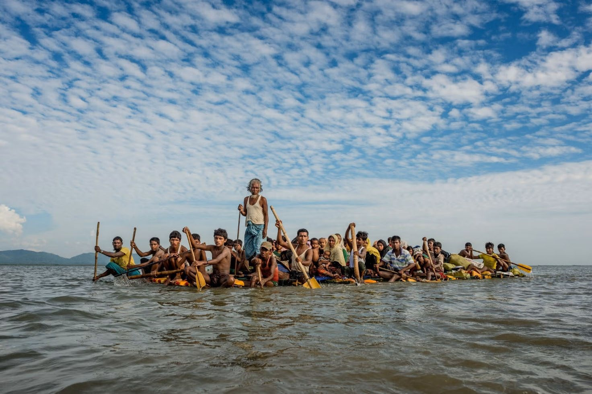

DYNAMES
DYNAMESOggi 19 novembre 2026, nel giorno in cui avviene il trilaterale Xi-Trump-Putin a Shenzen e l’operato della Corte Penale Internazionale viene definito “fuori controllo” e la Corte additata di agire “fuori dalla propria giurisdizione”, all’ Aia, alla Corte Internazionale di Giustizia, principale Organo Giudiziario delle Nazioni Unite, si riconosce la responsabilità del Myanmar per il genocidio commesso contro la popolazione Rohingya. Una decisione storica che non esaurisce il suo significato nell'accertamento delle atrocità perpetrate nel 2017. La sentenza rappresenta anche una delle più importanti conferme recenti della capacità del diritto internazionale di offrire strumenti concreti per far valere la responsabilità degli Stati.
La vicenda affonda le proprie radici in decenni di discriminazioni nei confronti della minoranza musulmana Rohingya, progressivamente privata di diritti civili e politici e sottoposta a politiche di esclusione. Nell'agosto 2017, in risposta agli attacchi condotti dal gruppo armato Arakan Rohingya Salvation Army (ARSA), le forze armate del Myanmar avviarono una vasta operazione militare nello Stato di Rakhine. Villaggi incendiati, esecuzioni, violenze sessuali e deportazioni provocarono la fuga di oltre 700.000 persone verso il Bangladesh.
Dalla persecuzione al ricorso del Gambia
Il procedimento davanti alla Corte non fu però avviato dal Bangladesh, né da uno Stato direttamente colpito da quelle violenze. L'11 novembre 2019 fu il Gambia, con il sostegno dell'Organizzazione della cooperazione islamica, a presentare ricorso contro il Myanmar per violazione della Convenzione del 1948 sulla prevenzione e repressione del genocidio. Nel gennaio 2020 la Corte ordinò misure provvisorie per proteggere i Rohingya e preservare le prove delle violenze. Nel luglio 2022 respinse le eccezioni preliminari sollevate dal Myanmar, riconoscendo la legittimazione del Gambia ad agire. Il procedimento è poi proseguito con lo scambio di memorie, l'intervento di undici Stati nell'interpretazione della Convenzione e l'esame delle prove, fino alla decisione di merito del 19 novembre.
La pronuncia della Corte e le conseguenze giuridiche
Ma oggi, 19 Novembre 2026, la Corte non si è limitata a riconoscere la gravità delle violenze, in una decisione in cui hanno preso parte al giudizio: Il Presidente Iwasawa; la Vicepresidente Sebutinde, in ordine alfabetico i Giudici: Tomka, Abraham, Hanqin, Nolte, Charlesworth, Nemer Caldeira Brant, Manuel Gómez Robledo, H. Cleveland, Aurescu, Tladi, Daifallah Hmoud; i Giudici ad hoc: Pillay (Gambia), Kress (Myanmar).
Si è esaminata la tesi difensiva del Myanmar, secondo cui le operazioni militari rispondevano a esigenze di contro insurrezione, e ha concluso che questa spiegazione non poteva giustificare il quadro complessivo delle condotte accertate. Secondo i giudici, l'unica inferenza ragionevole dalle prove considerate nel loro insieme era l'intenzione di distruggere una parte sostanziale della popolazione Rohingya. È il passaggio decisivo che permette di qualificare quelle condotte come genocidio, e non soltanto come una successione di gravissimi crimini internazionali.
La sentenza dispone inoltre obblighi concreti: indagare sui responsabili e, quando ne ricorrano i presupposti, perseguirli e punirli; garantire la non ripetizione delle violazioni; consentire il ritorno sicuro, volontario e dignitoso degli sfollati e assicurare riparazioni alle vittime.
Ma è soprattutto sul piano della responsabilità internazionale che questa pronuncia assume una portata destinata a superare il caso del Myanmar.

Gli obblighi erga omnes partes e la tutela delle vittime
Il Gambia non era uno Stato direttamente leso dal genocidio. Eppure, aveva il diritto di rivolgersi alla Corte. Il fondamento risiede nella natura erga omnes partes degli obblighi derivanti dalla Convenzione sul genocidio: obblighi dovuti a tutti gli Stati che ne sono parte, ciascuno dei quali possiede un interesse giuridico al loro rispetto.
Non si tratta di un principio nuovo. La Corte lo aveva già riconosciuto nella propria giurisprudenza e ribadito nella decisione sulle eccezioni preliminari del 2022. In particolare, al paragrafo 108 la Corte aveva chiarito che l'interesse comune degli Stati contraenti alla prevenzione e repressione del genocidio consente a ciascuno di essi di invocare la responsabilità di un altro Stato parte, anche in assenza di un pregiudizio diretto.
La Corte conferma che uno Stato non direttamente leso può non soltanto invocare la responsabilità internazionale di un altro Stato, ma anche chiedere garanzie di non ripetizione e riparazioni nell'interesse delle vittime. Nel farlo richiama espressamente l'articolo 48 degli articoli sulla responsabilità internazionale degli Stati elaborati dalla Commissione di diritto internazionale e il proprio parere consultivo del 23 luglio 2025 sugli obblighi degli Stati in materia di cambiamento climatico.
Il Gambia non può pretendere risarcimenti per sé, ma può esigere che il Myanmar ripari i danni subiti dai Rohingya. È una distinzione fondamentale poiché trasforma la tutela di un interesse comune in una concreta possibilità di giustizia, con la riparazione del danno. In una fase in cui il diritto internazionale viene frequentemente descritto come impotente, subordinato ai rapporti di forza o applicato secondo convenienze politiche, questa sentenza offre una risposta importante.
Il significato e i limiti della decisione
Non significa che la giustizia internazionale sia priva di limiti. L'esecuzione delle decisioni resta una questione complessa e nemmeno questa pronuncia cancellerà automaticamente le conseguenze del genocidio. Inoltre, la decisione sulla responsabilità del Myanmar è stata adottata con nove voti favorevoli e sei contrari, a testimonianza di un confronto giuridico tutt'altro che scontato.
Eppure, proprio qui risiede la sua forza. La Corte ha esaminato un ricorso presentato da uno Stato geograficamente e politicamente distante alla vicenda, ha ribadito l’effettività del principio erga omnes in un momento in cui questo fa da monito nell’instabilità della competizione internazionale. La corte oggi rammenta agli stati lo spirito fondante la Carta delle Nazioni Unite, e dei trattati successivi, non parole vuote dette in momenti di opportunità politica o di pace a costo zero, bensì un insieme di valori condivisi per regolare la convivenza internazionale. Questa sentenza sicuramente da sola non risolve le crisi oggi in atto, di contro dimostra che la Giustizia internazionale possiede ancora gli strumenti per giudicare le condotte degli Stati secondo diritto, e non secondo la convenienze politiche che non competono la giurisdizione, affermando a gran voce che il diritto internazionale non ha cessato di esistere, e che la violazione di una norma non ne indica la sua fine, né tanto meno la fine dell’ordinamento da cui essa proviene, come il “precetto” del non uccidere inascoltato non esaurisce l’imperatività dello Stato nei suoi territori.
Questo precedente storico potrà assumere rilievo anche per altri procedimenti fondati sulla Convenzione sul genocidio. Non anticipa il loro esito, ma consolida un percorso giurisprudenziale che consente agli Stati di agire a tutela di uno dei più biechi crimini e permette agli studiosi e alla giurisprudenza futura di iniziare a individuare limiti positivi e non solo negativi per la ricostruzione di questo fenomeno, ricordando che la richiesta di tutela non spetta solo alle vittime della violazione, ma è un obbligo dell’intera comunità internazionale vegliare su se stessa, finché di comunità si continuerà a discutere.
Note e riferimenti
Riferimenti riportati nel contributo originale, con collegamenti ai documenti e alle fonti disponibili online.
- Trilaterale Trump-Xi-Putin, la diretta. Putin: “No ai negoziati sul cessate il fuoco dopo attacco al ponte in Crimea”, Repubblica, 19 Novembre 2026. Trump, Xi e Putin, l'incontro a Shenzhen oggi in diretta - la Repubblica Consulta la fonte
- Corte internazionale di giustizia, Application of the Convention on the Prevention and Punishment of the Crime of Genocide (The Gambia v. Myanmar: 11 States intervening), sentenza del 19 novembre 2026, dispositivo, par. 627. Testo integrale. Consulta la fonte
- UNHCR, Seven years of crisis for Rohingya refugees, 23 agosto 2024. Documento UNHCR; Corte internazionale di giustizia, sentenza del 19 novembre 2026, parr. 134-168 e 181-270. Consulta la fonte
- Corte internazionale di giustizia, The Gambia v. Myanmar, ricorso dell'11 novembre 2019, ordinanza sulle misure provvisorie del 23 gennaio 2020 e sentenza sulle eccezioni preliminari del 22 luglio 2022. Documentazione del procedimento. Consulta la fonte
- Corte internazionale di giustizia, sentenza del 19 novembre 2026, parr. 438-469, in particolare parr. 453, 467 e 468, relativi alla valutazione dell'intento genocida e all'esclusione delle interpretazioni alternative delle condotte militari. Testo integrale. Consulta la fonte
- Corte internazionale di giustizia, sentenza del 19 novembre 2026, parr. 591-626, relativi alle conseguenze giuridiche e alle misure riparatorie, in particolare par. 615 sulla restituzione e parr. 618- 626 sulla compensazione. Consulta la fonte
- Application of the Convention on the Prevention and Punishment of the Crime of Genocide (The Gambia v. Myanmar), Preliminary Objections, Judgment, I.C.J. Reports 2022. Judgment of 22 July 2022. Consulta la fonte